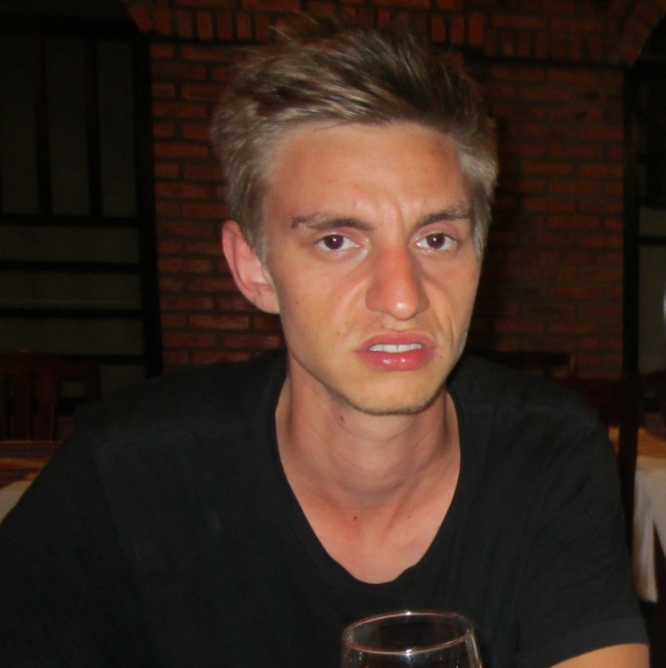

Anders Olsen (He/Him)
Controller by heart and soul
Skovlunde born and raised
anderz1988@live.dk
27216289

Controller by heart and soul
Skovlunde born and raised
anderz1988@live.dk
27216289
Aldrende knøs med 10.000+ smøgere på bagen, men jovial af sind, og min hårgrænse har ikke rykket sig
tøddel.
Altid klar på at bogføre et bilag eller to, og jeg byder altid ind med fake laughs, når Bitten
underholder med sin histore om dengang, hun fik virkelig god "tasiky" på resort i Grækenland.
Selvom jeg bor i Skovlunde, så føler jeg mig meget urban og med-på-noderne; jeg drikker havremælk,
mit portræt på LinkedIn er i sort/hvid, og min allerbedsteste kristne ven ejer også en aktie i en
vingård et eller andet sted.
Jeg får ting fra hånden, når jeg går ind i noget. Jeg har selv bygget min terasse (det tog kun to
år).
Jeg drikker min kaffe med havremælk (se længere oppe), og jeg boller helst på første date.
Penge, penge, penge
På min LinkedIn skriver jeg,
at jeg har arbejdet to forskellige steder hos henholdsvis
Nordea Liv & Pension og Velliv, men lad mig være ærlig; det er det samme sted, der skiftede navn. Så
næsten ni år, mine damer og herrer.
McDonalds er en relativt stor fast food restaruant, som jeg arbejdede på i rigtig lang tid. Jeg startede min karriere på pomfritter, og så blev jeg på en eller anden måde manager en dag, da alle mine nice kollegaer var stoppet.
Cand.merc.FIR
Fire års pause fra studierne. Trængte til at støve de gamle økonomistyringsbøger af og se, om der
var sket noget nyt på området siden sidst - det var der ikke.
HD (Står for "Handelsvidenskablig Diplomprøve" - ikke "High Definition")
Afsluttende hovedopgave: Offentlig-Private Partnerskaber - en teoretisk og regnskabsmæssig
gennemgang - gaaaaaab
Bare elev.
Kørte i min mors Skoda til og fra skolen. Til festerne tog jeg gerne gulvet med
hjem.
Jeg tog også med på skiferie, året efter jeg var gået ud.
Hypermobilitet
Bogføringsloven
Nolle
Pomfritter (se også arbejdserfaring)
360 på ski og dansegulv
Dansk
Engelsk
Fulde-Engelsk
Spansk
Alicante-Spansk